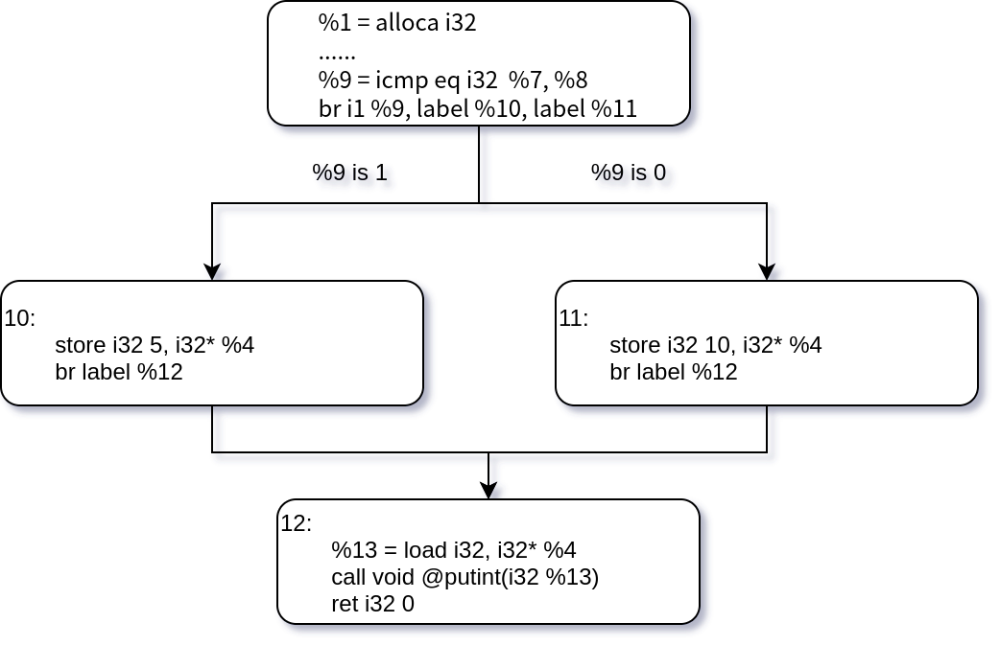

LLVM IR 快速上手
写在前面
本节默认你已经看过了LLVM 工具链下载以及LLVM 工具链介绍两节的内容
如果你对 LLVM IR 比较熟悉，可以跳过本节
本节的内容较多较难，可能需要多看几遍才能消化。由于本节篇幅较长且助教精力有限，部分地方可能讲得不全面或存在错误，实际以 LLVM Lang Ref 以及 LLVM Programmer Manual 为准。
LLVM IR 简介
在开发编译器时，通常的做法是将源代码编译到某种中间表示（Intermediate Representation，一般称为 IR），然后再将 IR 翻译为目标体系结构的汇编（比如 MIPS 或 X86），这种做法相对于直接将源代码翻译为目标体系结构的好处主要有两个：
首先，有一些优化技术是目标平台无关的（例如作为我们实验挑战任务的死代码删除和常量折叠），我们只需要在 IR 上做这些优化，再翻译到不同的汇编，这样就能够在所有支持的体系结构上实现这种优化，这大大的减少了开发的工作量。
其次，假设我们有
m种源语言和n种目标平台，如果我们直接将源代码翻译为目标平台的代码，那么我们就需要编写m * n个不同的编译器。然而，如果我们采用一种 IR 作为中转，先将源语言编译到这种 IR ，再将这种 IR 翻译到不同的目标平台上，那么我们就只需要实现m + n个编译器。
因此，目前常见的编译器都分为了三个部分，前端（front-end），中端（middle-end）以及后端（back-end），每一部分都承担了不同的功能：
- 前端：将源语言编译到 IR
- 中端：对 IR 进行优化
- 后端：将 IR 翻译为目标语言
同理，LLVM 也是按照这一结构设计的。

LLVM IR 具有三种表示形式，这三种中间格式是完全等价的：
- 在内存中的编译中间语言（我们无法通过文件的形式得到）
- 在硬盘上存储的二进制中间语言（格式为
.bc） - 人类可读的代码语言（格式为
.ll）
本次实验要求输出 .ll 形式的 LLVM IR。
LLVM IR 示例程序
让我们通过一个小示例来快速熟悉 LLVM IR 的一些特性。在学习这部分的时候，你可能需要和推荐的 LLVM IR 指令 一节对照。
在接下来的任务中，我们会生成下面这个 C 程序的 .ll 形式 LLVM IR：
// main.c
int foo(int first, int second) {
return first + second;
}
int a = 5;
int main() {
int b = 4;
return foo(a, b);
}
我们在命令行中输入 clang -emit-llvm -S main.c -o main.ll -O0（如果你还不知道这个命令中各个选项的含义，请先去看「LLVM 相关工具链下载」一节），然后打开同目录下的 main.ll 文件，会看到生成的内容如下所示：
; ModuleID = 'main.c'
source_filename = "main.c"
target datalayout = "e-m:e-p270:32:32-p271:32:32-p272:64:64-i64:64-f80:128-n8:16:32:64-S128"
target triple = "x86_64-pc-linux-gnu"
@a = dso_local global i32 5, align 4
; Function Attrs: noinline nounwind optnone sspstrong uwtable
define dso_local i32 @foo(i32 %0, i32 %1) #0 {
%3 = alloca i32, align 4
%4 = alloca i32, align 4
store i32 %0, i32* %3, align 4
store i32 %1, i32* %4, align 4
%5 = load i32, i32* %3, align 4
%6 = load i32, i32* %4, align 4
%7 = add nsw i32 %5, %6
ret i32 %7
}
; Function Attrs: noinline nounwind optnone sspstrong uwtable
define dso_local i32 @main() #0 {
%1 = alloca i32, align 4
%2 = alloca i32, align 4
store i32 0, i32* %1, align 4
store i32 4, i32* %2, align 4
%3 = load i32, i32* @a, align 4
%4 = load i32, i32* %2, align 4
%5 = call i32 @foo(i32 %3, i32 %4)
ret i32 %5
}
attributes #0 = { noinline nounwind optnone sspstrong uwtable "disable-tail-calls"="false" "frame-pointer"="all" "less-precise-fpmad"="false" "min-legal-vector-width"="0" "no-infs-fp-math"="false" "no-jump-tables"="false" "no-nans-fp-math"="false" "no-signed-zeros-fp-math"="false" "no-trapping-math"="true" "stack-protector-buffer-size"="8" "target-cpu"="x86-64" "target-features"="+cx8,+fxsr,+mmx,+sse,+sse2,+x87" "tune-cpu"="generic" "unsafe-fp-math"="false" "use-soft-float"="false" }
!llvm.module.flags = !{!0, !1, !2}
!llvm.ident = !{!3}
!0 = !{i32 1, !"wchar_size", i32 4}
!1 = !{i32 7, !"PIC Level", i32 2}
!2 = !{i32 7, !"PIE Level", i32 2}
!3 = !{!"clang version 12.0.1"}
根据个人使用的硬件与系统不同，部分内容会出现较小区别，例如 target triple 与 target datalayout 是程序的标签属性说明，在我们的实验中并不要求生成它们；align 字段描述了程序的对齐属性；dso_local 是变量和函数的的运行时抢占说明符；以 ; 开头的字符串是 LLVM IR 的注释（这个最好记住）……这些内容在本实验里也不要求生成。
将上面谈到的内容都删除以后，我们的 .ll 文件依然是符合格式的。我们将无用的语句删去后，就只留下了需要关注的正文内容。为了方便同学的理解，我们还加上了相关的注释：
; 所有的全局变量都以 @ 为前缀，后面的 global 关键字表明了它是一个全局变量
@a = global i32 5 ; 注意，@a 的类型是 i32* ，后面会详细说明
; 函数定义以 `define` 开头，i32 标明了函数的返回类型，其中 `foo`是函数的名字，`@` 是其前缀
; 函数参数 (i32 %0, i32 %1) 分别标明了其第一、第二个参数的类型以及他们的名字
define i32 @foo(i32 %0, i32 %1) { ; 第一个参数的名字是 %0，类型是 i32；第二个参数的名字是 %1，类型是 i32。
; 以 % 开头的符号表示虚拟寄存器，你可以把它当作一个临时变量（与全局变量相区分），或称之为临时寄存器
%3 = alloca i32 ; 为 %3 分配空间，其大小与一个 i32 类型的大小相同。%3 类型即为 i32*
%4 = alloca i32 ; 同理，%4 类型为 i32*
store i32 %0, i32* %3 ; 将 %0（i32）存入 %3（i32*）
store i32 %1, i32* %4 ; 将 %1（i32）存入 %4（i32*）
%5 = load i32, i32* %3 ; 从 %3（i32*）中 load 出一个值（类型为 i32），这个值的名字为 %5
%6 = load i32, i32* %4 ; 同理，从 %4（i32*） 中 load 出一个值给 %6（i32）
%7 = add nsw i32 %5, %6 ; 将 %5（i32） 与 %6（i32）相加，其和的名字为 %7。nsw 是 "No Signed Wrap" 的缩写，表示无符号值运算
ret i32 %7 ; 返回 %7（i32）
}
define i32 @main() {
; 注意，下面出现的 %1，%2……与上面的无关，即每个函数的临时寄存器是独立的
%1 = alloca i32
%2 = alloca i32
store i32 0, i32* %1
store i32 4, i32* %2
%3 = load i32, i32* @a
%4 = load i32, i32* %2
; 调用函数 @foo ，i32 表示函数的返回值类型
; 第一个参数是 %3（i32），第二个参数是 %4（i32），给函数的返回值命名为 %5
%5 = call i32 @foo(i32 %3, i32 %4)
ret i32 %5
}
虽然上面这个文件并没有包含本实验中可能使用到的所有特性与指令，但是已经展现出了很多值得注意的地方，比如：
- 注释以
;开头 - LLVM IR 是静态类型的（即在编写时每个值都有明确的类型）
- 局部变量的作用域是单个函数（比如
@main中的%1是一个i32*类型的地址，而@foo中的%1是一个i32类型的值） - 临时寄存器（或者说临时变量）拥有升序的名字（比如
@main函数中的%1，%2，%3） - 全局变量与局部变量由前缀区分，全局变量和函数名以
@为前缀，局部变量以%为前缀 - 大多数指令与字面含义相同（
alloca分配内存并返回地址，load从内存读出值，store向内存存值，add用于加法等）
LLVM IR 的结构
如果看完下面的内容以后依然对 LLVM IR 的结构不甚了了，LLVM Programmer Manual 里的内容可能能起到帮助。
总体结构
- LLVM IR 文件的基本单位称为
module（本实验中涉及到的部分均为单module，因为本实验只涉及到单文件编译） - 一个
module中可以拥有多个顶层实体，比如function和global variavle - 一个
function define中至少有一个basicblock - 每个
basicblock中有若干instruction，并且都以terminator instruction结尾
函数定义与函数声明 (Define&Delcare)
大家都学习过汇编语言，都知道在汇编层面，一个函数与一个控制语句是相似的，只不过汇编函数在跳转时有一些附加的操作。而在 LLVM 中，函数拥有更高一层的抽象。
函数定义
在上面生成的示例代码里，我们已经看到了函数定义的样子，一个最基本的main函数的定义长这样：
define i32 @main() {
ret i32 0 ; 返回 i32 类型的值 0
}
函数后面也可以加上参数列表，像这样：
define i32 @foo(i32 %a,i32 %b) {
ret i32 0 ; 返回 i32 类型的值 0
}
一个函数定义的最简单的语法形如
define + 返回值 (i32) + 函数名 (@foo) + 参数列表 ((i32 %a,i32 %b)) +函数体 ({ret i32 0})
（题外话：我们还可以在参数列表后面加上属性用来指导优化和代码生成，上面未做简化生成的main.ll中能够看到 main 函数的函数定义是 define dso_local i32 @main() #0...，这里的 #0 与main.ll中靠后的attributes #0 = ...是对应的，他们被用来给函数加上特定的标记，例如是否是能够被内联。这些内容和实验无关，你并不需要了掌握，感兴趣的话可以在 这里 进行拓展阅读。)
函数声明
除了函数定义以外，函数声明也是非常常见的，我们在一个module里，如果想要调用别的模块的函数，就需要在本模块先声明这个函数。在本实验中，要使用库函数，你可能需要用函数声明的形式在你生成的.ll文件里声明库函数的名字（我们将在下面做出示例）函数声明的结构也比较简单，就是使用declare关键词替换define，并且没有函数体。比如，下面是一些你在后续实验中将会用到的库函数的函数声明：
declare i32 @getint()
declare i32 @getarray(i32*)
declare i32 @getch()
declare void @putint(i32)
declare void @putch(i32)
declare void @putarray(i32,i32*)
基本块（Basic Block）
一个基本块是包含了若干个指令以及一个终结指令的代码序列。
基本块只会从终结指令退出，并且基本块的执行是原子性的，也就是说，如果基本块中的一条指令执行了，那么块内其他所有的指令也都会执行。这个约束是通过代码的语义实现的。基本块内部没有控制流，控制流是由多个基本块直接通过跳转指令实现的。
形象地讲，一个基本块中的代码是顺序执行的，且顺序执行的代码都属于一个基本块。
例如你有一份不含跳转（没有分支、循环）也没有函数调用的、只会顺序执行的代码，那么这份代码只有一个基本块。
然而，一旦在中间加入一个 if-else 语句，那么代码就会变成四个基本块：if 上面的代码仍然是顺序执行的，在一个基本块中；then 和 else 各自部分的代码也都是顺序执行的，因此各有一个基本块；if 之后的代码也是顺序执行的，也在一个基本块中。所以总共四个基本块。
指令（Instruction）
指令指的是 LLVM IR 中的非分支指令（non-branching Instruction），通常用来进行某种计算或者是访存（比如上面例子中的 add、load），这些指令并不会改变程序的控制流。
值得一提的是，call 指令也是非分支指令，因为在使用 call 调用函数时，我们并不关系被调用函数内部的具体情况（即使被调用函数内部存在的控制流），而是只关心我们传入的参数以及被调用函数的返回值，因此这并不会影响我们当前程序的控制流。
终结指令（Terminator instruction）
终结指令一定位于某个基本块的末尾（否则中间就改变了基本块内的控制流）；反过来，每个基本块的末尾也一定是一条终结指令（否则仍然是顺序执行的，基本块不应该结束）。终结指令决定了程序控制流的执行方向。例如，ret 指令会使程序的控制流返回到当前函数的调用者（可以理解为 return），br 指令表示根据标识符选择一个控制流的方向（可以理解为 if）。
下面，我们通过一个例子来介绍程序的控制流是如何通过基本块与终结指令描述的：
//if.c
int main() {
int a = getint();
int b = getint();
int c = 0;
if (a == b) {
c = 5;
} else {
c = 10;
}
putint(c);
return 0;
}
将 if.c 导出为 LLVM IR 并且删去实验无关部分，再手动加上函数声明（我们会在后续实验中会说明要怎么做）后的代码如下所示
declare i32 @getint()
declare void @putint(i32)
define i32 @main() {
%1 = alloca i32
%2 = alloca i32
%3 = alloca i32
%4 = alloca i32
store i32 0, i32* %1
%5 = call i32 () @getint()
store i32 %5, i32* %2
%6 = call i32 () @getint()
store i32 %6, i32* %3
store i32 0, i32* %4
%7 = load i32, i32* %2
%8 = load i32, i32* %3
%9 = icmp eq i32 %7, %8
br i1 %9, label %10, label %11
10: ; preds = %0
store i32 5, i32* %4
br label %12
11: ; preds = %0
store i32 10, i32* %4
br label %12
12: ; preds = %11, %10
%13 = load i32, i32* %4
call void @putint(i32 %13)
ret i32 0
}
这个程序的控制流如图所示 
可以看到，br指令一共在代码中出现了三次
br i1 %9, label %10, label %11 ; A
br label %12 ; B
br label %12 ; C
在这里，我们先介绍一下br指令的用法，
br指令的语法为br + 标志位 + truelabel + falselabel，或者br + label
形如上面代码中 A 用法的转移指令叫做条件转移，如果标志位为1，程序会跳往truelabel标记的basicblock。如果标志位为0，程序会跳往falseblock标记的basicblock。比如，在代码br i1 %9, label %10, label %11中，如果%9的值为1，就会跳转往基本块%10，如果为0，就会跳转往基本块%11。
形如上面代码中B,C的用法的转移指令叫做无条件转移，他会在程序运行到此处时无条件跳转到目标基本块。在上面代码中B,C两处的代码都会无条件跳转到基本块%12。
如上图所示，%9是icmp eq指令（用来判断两个值是否相等，我们会在推荐使用的指令一节详细介绍）的结果，如果%7等于%8，那么%9的值就会为1，否则为0。这条指令对应了源代码中的if(a == b)，c=5对应了基本块%10，c=10对应了基本块%11，这两个基本块运行结束时都需要跳转到目标基本块%12执行后面的语句putint(c)以及return 0。
类型系统
本节由 LLVM Lang Ref:type-system 节选翻译而来
接下来我们介绍 LLVM IR 的类型系统。 类型系统是 LLVM IR 中最重要的部分之一，强大的类型系统在很大程度上降低了读取和分析 LLVM IR 的难度，并且可以实现一些在一般的的三地址码 IR 中难以实现的优化。LLVM IR 的类型多种多样，我们在此只介绍可能和实验关系紧密的几种。
Void Type
仅占位用，不代表任何值也不占任何空间。 比如
define void @foo(){
ret void
}
Integer Type
最简单的类型，代表了后面数字决定的位宽的类型，比如i1代表的就是1bit长的 integer（可以看作是 bool），i32就是32bit长的 integer, 在实验涉及内容里，我们只需要i1和i32类型。
比如
ret i32 0
br i1 %2,label %3,label %4
Label Type
标签类型，用作代码标签，比如
br i1 %9, label %10, label %11
br label %12
其他 Type
在后续的实验中，我们还会介绍 Array Type（数组部分）以及Pointer Type（变量部分），为了减轻大家第一次实验的学习压力，在此就不再详述。
说在最后
LLVM IR 是一个非常庞大的系统，这节文章仅仅能够介绍到其最重要的抽象以及和我们实验联系最紧密的抽象，你不能指望光看这一节的内容就对其完全了解，当你在后续实验中遇到问题时，你可以选择查看 Lang Ref，也可以亲自编译两份代码并看看 Clang 是怎么做的。你还可以在 github 通过 issue 的形式向助教提问（不过我们两位助教需要面对接近 300 位同学，还需要改作业，出实验，编写示例代码，时间实在不算充裕，有可能无法及时回复）